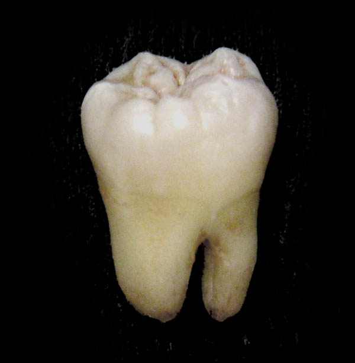

|  |
|---|
| RSE-007 shortly after creation |
RSE-007 is a sentient, grotesquely large tooth resembling that of a human molar, with the self given name ‘Jerry.’ RSE-007, as of January 1, 2022, has been observed at a height of 1.2 meters and a weight of 54 kilograms. RSE-007 is capable of highly intelligent speech in English, and has been described as being ‘incredibly friendly’ with no noted occurrence of it being hostile towards any RSE personnel.
RSE-007 was artificially manufactured by a highly skilled RSE researcher sometime in August 1998 as a defense mechanism against most mid-level danger class RSE specimen. It was given the ability to channel power and release it in a controlled beam capable of piercing thick steel, and is often used at a low power level to sedate RSE specimen who have breached containment.
RSE-007 is held in its own room in the living quarters sector of Location 01. RSE-007 is able to freely roam most low clearance areas of each location. RSE-007 is to be notified immediately after a breach has occurred and quickly transported to the location of the breach.